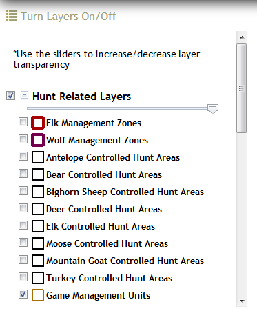

TURN LAYERS ON/OFF
TURN LAYERS ON/OFF

Toggle a layer on/off in the Turn Layers On/Off window by checking/unchecking the checkbox in front of its layer name.
Increase/decrease layer transparency using the slider at the top of each layer group. This is especially useful for the Land Management Layer; it is currently set at 50% transparency so you can see other layers and the basemap under it.
The campgrounds and wildlife layers have Popup Information Boxes enable. When these layers are turned on, click on a feature to get more information about it.
Layer Descriptions:
- Hunt Related Layers: created by IDFG GIS analysts and includes current year controlled hunt areas by species, elk and wolf management zones, areas closed to hunting as listed in corresponding hunting regulation booklets, game management units, Access Yes! properties, and south central Idaho wildlife tracts.
For more information about the Access Yes! program: http://fishandgame.idaho.gov/ifwis/huntplanner/accessyesguide.aspx
For more information about wildlife tracts: http://fishandgame.idaho.gov/public/wildlife/?getPage=298
- Administrative Boundaries: created by IDFG, BLM, and USFS. Useful layers for navigation and context.
For more information about Wildlife Management Areas: http://fishandgame.idaho.gov/public/wildlife/wma/
WMA desktop interactive map application: http://fishandgame.idaho.gov/ifwis/maps/wma/
- Land Management Layer: created by BLM. This layer displays the managing agency, not owner, of the surface of the land. This Surface Management Agency GIS dataset is not a legal document and should be used as a general guide only. Metadata
- Motorized & Non-motorized Trails: created by Idaho Dept. of Parks and Recreation using USFS Motor Vehicle Use Map and BLM Road data. NOTE: If these layers is grayed-out, it has a scale-dependency set on it and you need to zoom in until it becomes active. If you would like to see more information about a specific road/trail, use the Idaho Trails Map (http://www.trails.idaho.gov/trails/). Zoom into a road/trail of interest, click it with your mouse, and a popup information box will appear.
- Campgrounds: created by Idaho Dept. of Parks and Recreation. Idaho campgrounds and RV parks as of 12/9/13. Metadata
- Wildfire & Closure Related Layers:
- Fire Emergency Closure Areas: created by IDFG. Support from USFS Boise National Forest.
- Active Fire Perimeters & MODIS fire detection: created by GeoMAC (Geospatial Multi-Agency Coordination) Wildland Fire Support. http://www.geomac.gov/
Created with the Personal Edition of HelpNDoc: Free CHM Help documentation generator